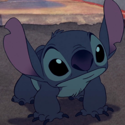

Nasci em Natal no dia 7 de julho de 2003. Com 1 meses de idade me mudei para o Rio de Janeiro onde fiquei até meus 15 anos.
Sempre gostei bastante de disciplinas relacionadas com Física e Química. Atualmente estudo no IFZN e curso eletrônica mas eu entrei no curso muito aleatoriamente já que tinha um nome legal e pelo meu gosto em acender leds de mil e uma maneiras, porém queria estar fazendo mecatrônica mas é a vida.
Eu amo o stitch então vou colocar uma foto dele stitch. Eu quero comer todo macarrão do mundo e abacaxi é melhor que acerola.
 Clique aqui para voltar